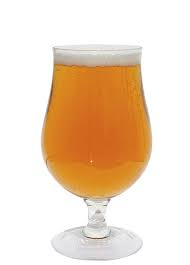

IPA
Las IPA se caracterizan por ser cervezas de alta graduación alcohólica (entre 5º y 7º), tener una mayor cantidad de lúpulo y por lo tanto un amargor (a partir normalmente de los 40 IBUs) y aroma intensos y cierta complejidad en el paladar.
La historia de la cerveza IPA, lo has adivinado, tiene que ver tiene que ver con la India, de ahí su nombre. Y se remonta a las largas travesías de la Compañía Británica de las Islas Orientales entre Asia y Europa y su deseo de conseguir una cerveza que aguantara el viaje, algo que consiguieron aumentando precisamente la graduación y la cantidad de lúpulo. Y ¡bingo! así nació la IPA.